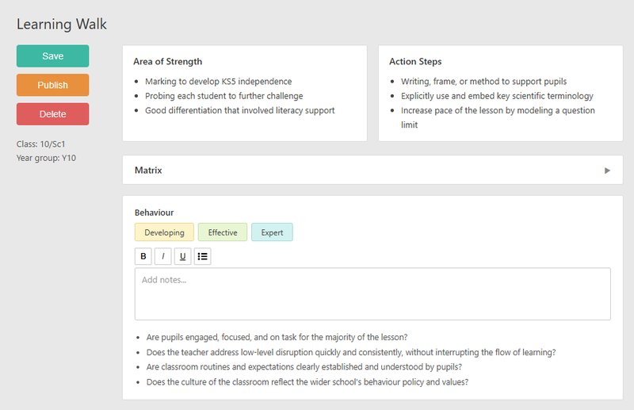

A feature I designed and shipped end-to-end that addressed a real user problem, and taught me the cost of designing for only one user.

The signal
ProgressTeaching is an EdTech platform used by UK schools to log and analyse lesson observations. The observation form was static, meaning every type of observation showed the same sections, even when most of them weren't relevant.
Schools of different types and sizes were independently reporting the same frustration. Observers wanted dynamic forms that only showed what was relevant to the observation they were conducting.
"We do book looks every half term but the form shows everything. Most of it isn't relevant." SLT member, Primary school
"Our observers have to ignore half the form depending on what type of observation they're doing." SLT member, Secondary school
The solution
I considered collapsing irrelevant sections by default, but they could still be expanded and filled out, which risked confusing observers. Instead, I chose to remove them entirely with conditional logic tied to the observation type.
I documented the solution in Jira with annotated screenshots and walked the engineer through the problem and intended outcome.
Toggle to see the feature in action. Explore the full prototype →
70%
of existing schools adopted Conditional Forms within a year
Almost every new school onboarded after launch used it as standard.
The blind spot
Conditional Forms solved the observer's problem. The signal was consistent, the solution worked, and the adoption numbers proved it.
But I never thought about who would configure the forms. The setup process was convoluted enough that almost every school relied on me to create and manage their forms manually. I'd shipped a feature that worked for its users but created an operational problem because I didn't ask "who else touches this, and what does their experience look like?"
That's the question I'd now ask at the start of every project. Not just "who uses the output" but "who configures it, who maintains it, and what does their workflow look like?"